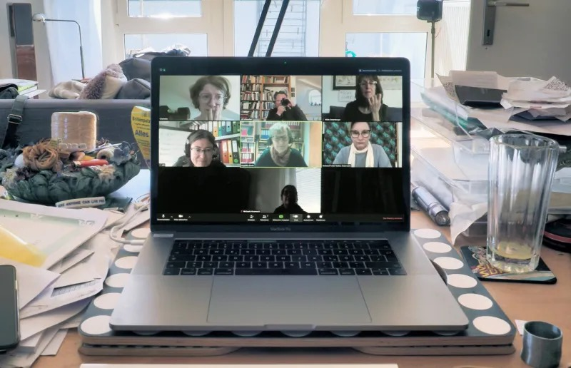

Tipos de Videoconferencias
Videoconferencia Personal
La videoconferencia personal es ideal para quienes desean comunicarse con familiares y amigos, especialmente cuando la distancia geográfica es un factor. Este tipo de videoconferencia es generalmente informal y se utiliza para mantener conexiones personales sin necesidad de instalaciones o equipos especializados. Aplicaciones populares como Skype, Zoom y WhatsApp.
Videoconferencia Empresarial
En el ámbito profesional, la videoconferencia empresarial es fundamental para mantener la comunicación efectiva entre equipos de trabajo distribuidos en diferentes ubicaciones. Este tipo de videoconferencia permite realizar reuniones, presentaciones y colaboraciones en tiempo real, lo que es esencial para la productividad y la toma de decisiones.
Las plataformas como Microsoft Teams, Google Meet y Cisco Webex están diseñadas específicamente para entornos corporativos, ofreciendo una mayor seguridad, integración con otras herramientas empresariales y funciones avanzadas como la gestión de usuarios y el uso compartido de documentos.
Videoconferencia Educativa
La videoconferencia educativa ha cobrado una relevancia significativa en los últimos años, especialmente con la expansión del aprendizaje a distancia. Este tipo de videoconferencia facilita la enseñanza y el aprendizaje en un entorno virtual, permitiendo a estudiantes y profesores interactuar en tiempo real desde cualquier parte del mundo.
Plataformas como Zoom y Blackboard Collaborate se han adaptado para satisfacer las necesidades del sector educativo, incorporando características como salas de grupo, pizarra virtual y grabación de sesiones.
Videoconferencia Médica
La videoconferencia médica, también conocida como telemedicina, es un tipo de videoconferencia que conecta a los pacientes con profesionales de la salud sin necesidad de desplazarse a una consulta física. Este tipo de videoconferencia es especialmente útil en situaciones donde la movilidad es limitada o cuando se necesita atención médica urgente en áreas remotas.
Plataformas especializadas como Doxy.me y Amwell están diseñadas para ofrecer un entorno seguro y confidencial, cumpliendo con las normativas de privacidad y protección de datos.
Videoconferencia de Webinars
Los webinars son un tipo de videoconferencia que se utiliza principalmente para la difusión de conocimientos, formación y marketing. Este formato permite a los presentadores compartir su experiencia con una amplia audiencia, a menudo con la posibilidad de interactuar a través de preguntas y respuestas en vivo.
Plataformas como GoToWebinar y Zoom Webinar son populares en este campo, ofreciendo herramientas para la gestión de asistentes, grabación de sesiones y análisis de la participación.
